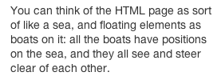
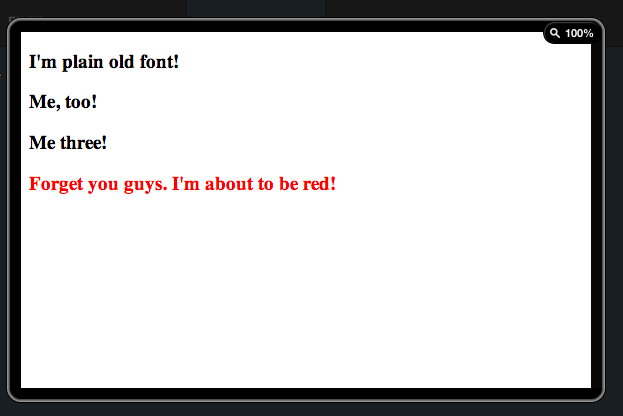
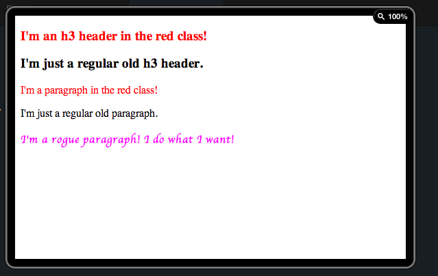
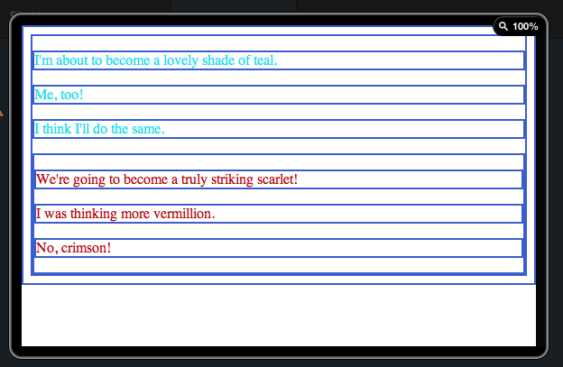

Welcome!
To Natalia's Website!
Welcome to my website! Feel free to browse the above links, or contact me for suggestions! :)
Today's topic of interest is: The Pathetic Fallacy.
The Pathetic fallacy ascribes human, emotional qualities (feelings, thought, sensation) to inanimate objects, as if possessed of human awareness.
What makes it interesting is that web developers like to use it a lot when making teaching tools for students. Here are some examples that I have found. I found them highly amusing:
 In this example, the pathetic fallacy is used tastefully.
 Here it is a bit more blunt.

 ...And now we're just getting preposterous ;)
\